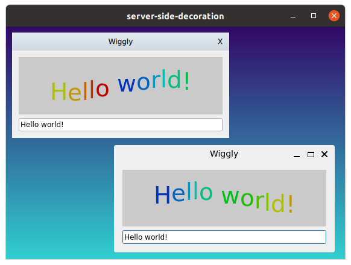

Qt Wayland Compositor Examples - Server Side Decoration Compositor
Server Side Decoration Compositor is a simple example that demonstrates server side window decorations on xdg-shell.

Introduction
Server Side Decoration Compositor is a desktop-style Wayland compositor example implementing server-side window decorations.
For an introduction to the basic principles of creating a Qt Wayland Compositor with Qt, see the Minimal QML example.
Decorations
The term window decorations refers to the additional UI that accompanies most windows in the windowing system. Examples of this are:
- The graphical frame around the window surface, which a user can click and drag to resize the window.
- The title bar of the window, which might be used to move the window.
- The system tool buttons for maximizing, minimizing and closing a window.
Traditionally in Wayland, it has been the client's task to render these decorations. At the same time, the position, size and state of the window is the compositor's domain. Some shell extensions optionally support server-side decorations. This enables a compositor to communicate to clients that they should not draw their own window decorations. Instead, the compositor is responsible for drawing the window decorations. This corresponds to how decorations are handled on other windowing systems, such as macOS, Windows and X11. It is worth noting that certain clients may not support this at all. If the system is expected to run such applications, then this should also be taken into account.
Benefits of server-side decorations:
- Clients do not have to reserve space for system UI in their Wayland buffers.
- Qt Quick and OpenGL-based clients do not have to render into a separate FBO and copy the content into their Wayland buffers.
- Client windows will have a consistent appearance, independent of which UI toolkit is in use.
- System functionality, such as resizing, closing and changing window state, is centralized in the server instead of being shared between the server and client.
The Code
The example compositor only supports the XdgShell extension. It initializes the extension in the usual way and adds surfaces to a ListModel in order to access them later.
XdgShell { onToplevelCreated: shellSurfaces.append({shellSurface: xdgSurface}); } XdgDecorationManagerV1 { preferredMode: XdgToplevel.ServerSideDecoration }
In addition, the example initializes the XdgDecorationManagerV1 extension. This allows it to communicate to the client that it prefers server-side decorations.
Since the interface is optional, it could be that the client does not support it and will always draw its own decorations. Therefore, the mode is only "preferred" and we need to check the actual mode of the top-level window before we decorate it.
Column { id: chrome width: shellSurfaceItem.implicitWidth Rectangle { visible: modelData.toplevel.decorationMode === XdgToplevel.ServerSideDecoration width: parent.width height: 30 gradient: "HeavyRain"; Text { text: modelData.toplevel.title anchors.centerIn: parent } Item { anchors.right: parent.right width: 30 height: 30 Text { text: "X"; anchors.centerIn: parent } TapHandler { onTapped: modelData.toplevel.sendClose() } } DragHandler { target: chrome } } ShellSurfaceItem { id: shellSurfaceItem moveItem: parent shellSurface: modelData onSurfaceDestroyed: shellSurfaces.remove(index) } }
For each window, we create a simple title bar above it. The title bar has a gradient, some text, a DragHandler which manages its position, and a close button.
The image shows a client which supports the decoration manager extensions on the upper left-hand side, and the same client with client-side decorations on the lower, right-hand side.